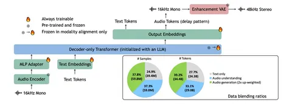

В более ранних статьях аудиопонимание и генерация традиционно шли параллельно и не пересекались. Но, если задуматься, человек, решая задачу в области аудио, одновременно мыслит словами и воспринимает звук, постоянно переключая в голове эти модальности — например, так происходит, когда композитор пишет музыку.
Объединить аудиопонимание, генерацию и рассуждения в одной модели — масштабная задача, которую и пытаются решить в статье UALM.
Авторы выделяют две основные проблемы. Первая — аудиопонимание обычно строят на авторегрессионных языковых моделях, а генерацию звука — на диффузионных. Нужно придумать, как объединить эти подходы. Вторая — большинство ризонинг-моделей работают только с текстом, и почти никто не рассматривает аудио как часть процесса рассуждений.
Для решения предлагают генерировать аудио тоже через авторегрессионную модель, используя для этого:
С помощью этих составляющих собирают модель UALM-Gen на базе Qwen2.5-1.5B, которая, по словам авторов, достигает качества диффузионных моделей. Правда, за это надо платить большим объёмом данных: около 80 тысяч часов аудио против нескольких тысяч часов у диффузионок.
В плане архитектуры верхнеуровнево UALM — это аудиоэнкодер + адаптер + Qwen2.5-7B (для основной модели). Аудио переводится в общее с текстом пространство представлений, после чего единая языковая модель занимается пониманием, ризонингом и генерацией аудио.
UALM-Gen решает только задачу генерации. Следующий шаг — объединить в модели задачи аудиопонимания и генерации. Для этого модифицируют DataMix, увеличивая долю генерационных задач, и вводят стадию Modality Alignment для согласования аудио- и текстовых представлений.
Последняя часть — мультимодальный ризонинг. Здесь используют Rich Captions — подробные текстовые планы будущего аудио, которые служат промежуточным представлением между запросом пользователя и генерацией. Также добавляют «самокритицизм», чтобы модель сама понимала, что можно улучшить, и могла итеративно прийти к лучшему результату.
Чтобы добавить ризонинг, модель обучают трём вещам:
В итоге можно сказать, что UALM — сильная текстовая модель, которая при этом показывает хорошие результаты в аудиопонимании и получает выигрыш от ризонинга при генерации аудио. По словам авторов, модель лучше конкурентов соблюдает пользовательские инструкции и точнее воспроизводит сложные звуковые сцены.
Можно посмотреть код и демо, а вот веса пока не выложены.
Александр Шаршавин
